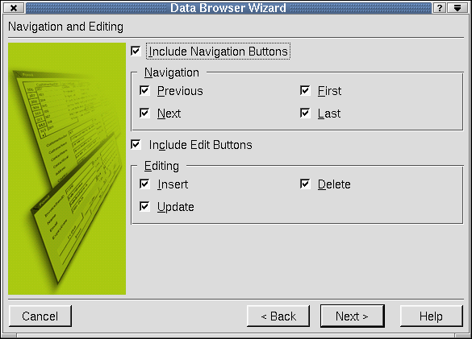

| Home | All Classes | Main Classes | Annotated | Grouped Classes | Functions |
[Prev: Reference: Dialogs] [Home] [Next: Reference: Windows]
In Qt Designer, some of the toolbars, menu options and templates invoke wizards to take you step-by-step through particular tasks. In this chapter we explain each Qt Designer wizard.
The Main Window Wizard is invoked by clicking the Main Window form template in the New File Dialog. This wizard helps you to create a main window with actions, menu options and toolbars.
The 'Choose available menus and toolbars' wizard page appears first. It presents three categories of default actions, File Actions, Edit Actions and Help Actions. For each category you can choose to have Qt Designer create menu items, toolbar buttons and signal/slots connections for the relevant actions. You can always add or delete actions, menu items, toolbar buttons and connections later. Check or uncheck the checkboxes to reflect your preferences.
Click Next to move on to the next wizard page.
The 'Setup Toolbar' wizard page is used to populate a toolbar with actions from each of the default action categories. Click the Category combobox to select which set of actions you wish to work on. The Actions listbox lists the actions available for the current category. The Toolbar listbox lists the toolbar buttons you want to create. Click the blue left and right arrow buttons to move actions into or out of the Toolbar list box. Click the blue up and down arrow buttons to move actions up and down within the Toolbar list box. Note that the '<Separator>' item in the Actions list box may be moved to the Toolbar list box as often as required and will cause a separator to appear in the finished toolbar.
Click Back if you want to return to the 'Choose available menus and toolbars' wizard page. Click Finish to populate the main window and to exit the wizard. Click Cancel on any of the wizard pages to leave the wizard without making any changes.
The Data Table Wizard is automatically invoked by clicking the datatable widget and placing it on the form. The datatable widget is used to create tabular views of database data.

The 'Choose the Database and Table' wizard page appears first. The available databases are displayed in the 'Database Connection' listbox. Choose a connection by clicking it. If there are no connections listed in the listbox, click Setup Database Connections to invoke the Edit Database Connections Dialog. The 'Table' listbox shows all the tables and views that are available through the selected database connection. Select a table or view by clicking it.
Click Next to move on to the next wizard page.
The 'Displayed Fields' wizard page is used to select fields that will be displayed in the table. By default, every field except the table or view's primary key, is initially placed in the 'Displayed Fields' list. Click the blue left and right arrow buttons to move fields from the 'Available Fields' listbox and into or out of the 'Displayed Fields' listbox. Click the blue up and down arrow buttons to move fields up and down within the 'Displayed Fields' listbox. The order in which fields appear in the 'Displayed Fields' listbox is the order they are shown in the Data Table, with the top-most field being in the left-most column.
Click Next to move on to the next wizard page. Click Back if you want to return to the 'Choose the Database and Table' wizard page.
The 'Table Properties' wizard page is used to set the Data Table's initial editing options. Check the 'Read-Only' checkbox to prevent records from being edited, deleted or added. Check the checkboxes in the 'Confirmations' section to force the user to confirm their changes. By default users must confirm deletions. Click 'Allow column sorting' to allow the user to sort the data by clicking a column's header (which displays the field name).
Click Next to move on to the next wizard page. Click Back if you want to return to the 'Displayed Fields' wizard page.
The 'SQL' wizard page is used to apply filters and sorts to the data in the table. Click the 'Filter' line edit and enter a valid SQL WHERE clause without the WHERE keyword. The filter applies to the data shown in the table.
To sort the available fields in the table, click the blue left and right arrow buttons to move fields from the 'Available Fields' listbox into or out of the 'Sort By' listbox. Click the blue up and down arrow buttons to move fields up and down within the 'Sort By' listbox. Click the A-Z button to change the sort order of the selected field in the 'Sort By' listbox from ascending to descending and vice versa.
Click Next to move on to the next wizard page. Click Back if you want to return to the 'Table Properties' wizard page.
The 'Finish' wizard page is used to select auto-editing and to leave the wizard. If you want user edits, e.g. inserts and updates, to be automatically applied when the user navigates to another record, check the 'AutoEditing' checkbox. If 'AutoEditing' is unchecked, users must press Enter to confirm their edit before moving to another record, or their edit will be lost.
Click Finish to create the datatable widget with all of the options you selected in the wizard. Click Back if you want to return to the 'SQL' wizard page. Click Cancel on any of the wizard pages to leave the wizard without making any changes.
The Data Browser wizard is automatically invoked by clicking the DataBrowser widget and placing it on the form. The DataBrowser widget is used to create a form view of database data.
The 'Choose the Database and Table' wizard page appears first. The available databases are displayed in the 'Database Connection' listbox. Choose a connection by clicking it. If there are no connections listed in the listbox, click Setup Database Connections to invoke the Edit Database Connections Dialog. The 'Table' listbox shows all the tables and views that are available through the selected database connection. Select a table or view by clicking it.
Click Next to move on to the next wizard page.
The 'Displayed Fields' wizard page is used to select fields that will be displayed in the table. Click the blue left and right arrow buttons to move fields from the 'Available Fields' listbox and into or out of the 'Displayed Fields' listbox. Click the blue up and down arrow buttons to move fields up and down within the 'Displayed Fields' listbox.
Click Next to move on to the next wizard page. Click Back if you want to return to the 'Choose the Database and Table' wizard page.

The 'Navigation and Editing' wizard page is used to create navigation and editing buttons.
Check the 'Include Navigation Buttons' checkbox to include navigation buttons. In the 'Navigation section, click 'Previous' to display the 'Previous' button on the form. This option allows you to navigate to the previous record in the table. Click 'Next' to display the 'next' button on the form. This button allows you to navigate to the next record in the table. Click 'First' to display the 'First' button on the form. This option allows you to navigate to the first record in the table. Click 'Last' to display the 'Last' button on the form. This button allows you to navigate to the last record in the table.
Click the 'Include Edit Buttons' checkbox to include editing buttons. In the 'Editing' section, check the 'Insert' checkbox to create an 'Insert' button for adding new records. Check the 'Update' checkbox to create an 'Update' button for updating existing records. Check the 'Delete' checkbox to create a 'Delete' button for deleting records.
The navigation buttons, and 'Update' and 'Delete' buttons will work without requiring any code. Since most database designs expect new records to be created with a unique key the 'Insert' button will not work. This can easily be fixed by generating the key in a slot connected to the QDataBrowser::beforeInsert() signal.
Click Next to move on to the next wizard page. Click Back if you want to return to the 'Displayed Fields' wizard page.
The 'SQL' wizard page is used to apply filters and sorts to the data in the table. Click the 'Filter' line edit and type a valid SQL WHERE clause without the WHERE keyword. The filter applies to the data shown in the table.
To sort the available fields in the table, click the blue left and right arrow buttons to move fields from the 'Available Fields' listbox into or out of the 'Sort By' listbox. Click the blue up and down arrow buttons to move fields up and down within the 'Sort By' listbox. Click the A-Z button to change the sort order of the selected field in the 'Sort By' listbox from ascending to descending and vice versa.
Click Next to move on to the next wizard page. Click Back if you want to return to the 'Navigation and Editing' wizard page.
The 'Layout' wizard page is used to design the layout of the database browser. To choose the number of columns the form will use, click the 'Number of Columns' spinbox. To make labels appear to the left of the data entry fields, click the 'Labels to left' radio button. To make labels appear above the data entry fields, click the 'Labels on top' radio button.
Click the 'Create layout for fields' checkbox to arrange all fields inside of a box layout. Click the 'Create layout for buttons' checkbox to arrange all buttons inside of a box layout. Click 'Create layout for all' to create a box layout for the whole widget.
You can always break the layouts and redo them later if you change your mind.
Click Next to move on to the next wizard page. Click Back if you want to return to the 'SQL' wizard page.
The 'Finish' wizard page is used to select auto-editing and to leave the wizard. If you want user edits, e.g. inserts and updates, to be automatically applied when the user navigates to another record, check the 'AutoEditing' checkbox. If 'AutoEditing' is unchecked, users must press Enter to confirm their edit before moving to another record, or their edit will be lost. This property can be changed later if desired.
Click Finish to create the databrowser widget with all of the options you selected in the wizard. Click Back if you want to return to the 'Layout' wizard page. Click Cancel on any of the wizard pages to leave the wizard without making any changes.
The Data View wizard is automatically invoked by clicking the dataview widget and placing it on the form. The Dataview widget is used to create a read-only form view of database data.
The 'Choose the Database and Table' wizard page appears first. The available databases are displayed in the 'Database Connection' listbox. Choose a connection by clicking it. If there are no connections listed in the listbox, click Setup Database Connections to invoke the Edit Database Connections Dialog. The 'Table' listbox shows all the tables and views that are available through the selected database connection. Select a table or view by clicking it.
Click Next to move on to the next wizard page.
The 'Displayed Fields' wizard page is used to select fields that will be displayed in the table. Click the blue left and right arrow buttons to move fields from the 'Available Fields' listbox and into or out of the 'Displayed Fields' listbox. Click the blue up and down arrow buttons to move fields up and down within the 'Displayed Fields' listbox.
Click Next to move on to the next wizard page. Click Back if you want to return to the 'Choose the Database and Table' wizard page.
The 'Layout' wizard page is used to design the layout of the data view. To choose the number of columns the form will use, click the 'Number of Columns' spinbox. To make labels appear to the left of the data entry fields, click the 'Labels to left' radio button. To make labels appear above the data entry fields, click the 'Labels on top' radio button.
Click Next to move on to the next wizard page. Click Back if you want to return to the 'Displayed Fields' wizard page.
The 'Finish' wizard page is used to create the wizard once you have selected all the option you want on the previous wizard pages.
Click Finish to create the databrowser widget with all of the options you selected in the wizard. Click Back if you want to return to the 'Layout' wizard page. Click Cancel on any of the wizard pages to leave the wizard without making any changes.
[Prev: Reference: Dialogs] [Home] [Next: Reference: Windows]
| Copyright © 2007 Trolltech | Trademarks | Qt 3.3.8
|